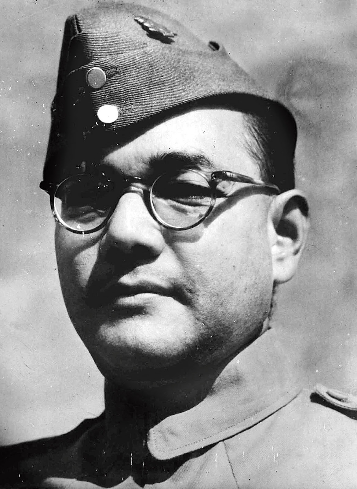

Biography of subash chandra bose
Subhas Chandra Bose, fondly known as "Netaji," was a towering figure in India's quest for freedom and one of the most charismatic leaders of the Indian independence movement. Born on January 23, 1897, in Cuttack, Odisha, he possessed an unwavering commitment to liberating India from British colonial rule.
Bose's leadership was marked by his unyielding spirit and his audacious belief in "Give me blood, and I shall give you freedom." He didn't just advocate for India's independence; he actively pursued it. Netaji's journey took him around the world, seeking support for the cause. His leadership of the Indian National Army (INA) during World War II, with the rallying cry "Jai Hind," was a testament to his unshakable resolve.
His daring escape from house arrest in 1941, followed by his journey through perilous territories to reach Axis powers, showcased his relentless pursuit of freedom. Despite challenges, he never lost sight of his vision: a free India where every citizen could live with dignity and pride.
Subhas Chandra Bose's life was tragically cut short in a plane crash in 1945, but his legacy endures. His courage, determination, and commitment to the principles of justice and liberty continue to inspire not only India but the world. His words, "Freedom is not given; it is taken," remind us that the struggle for freedom requires unwavering dedication and sacrifice.
Today, we pay tribute to Netaji Subhas Chandra Bose, a visionary leader, and a symbol of unwavering patriotism. His fearless pursuit of India's independence is a source of inspiration for generations, a reminder that the quest for freedom is a noble and enduring endeavor.
"Remember that the greatest crime is to compromise with injustice and wrong." - Subhas Chandra Bose